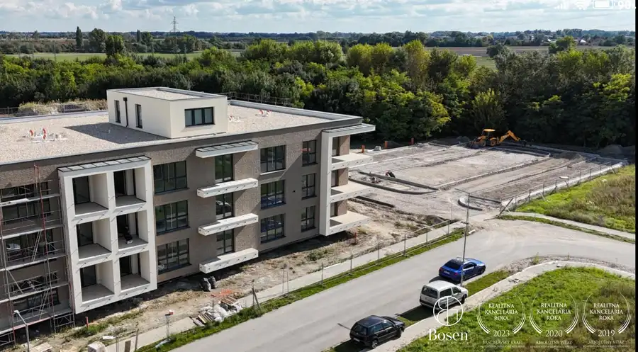
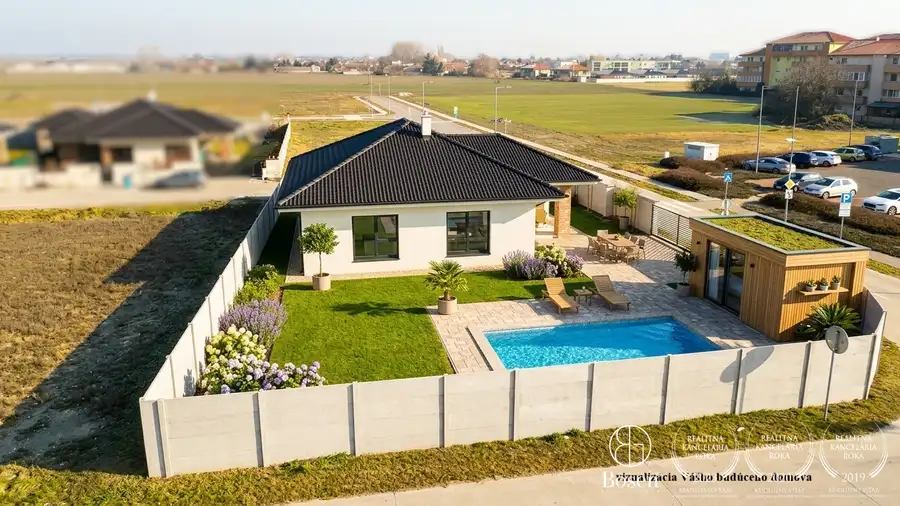
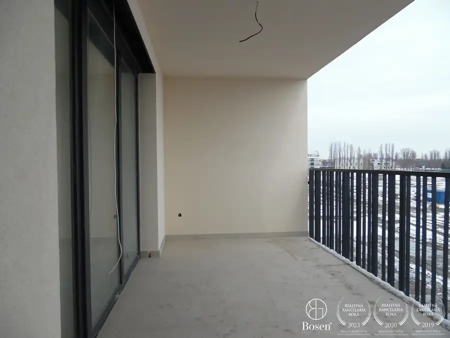

BOSEN | Prenájom kancelárskych priestorov 209,82m2 na Panenskej ulici - Staré Mesto, Bratislava
Staré Mesto, Bratislava
- Plocha209.82 m²
- StavKompletná rekonštrukcia
- VlastníctvoFiremné
O nehnuteľnosti
BOSEN Group Vám ponúka na prenájom exkluzívne priestory pre vaše podnikanie situované v jednej z najžiadanejších lokalít hlavného mesta, Panenskej ulici 8, Bratislava 1 – Staré Mesto.Mesto tu spája neopakovateľný architektonický charakter s komorným a kľudným pracovným prostredím, čo z nehnuteľnosti robí vynikajúce sídlo pre náročnú firmu či klientelu.Objekt sa nachádza v tichom prostredí s výbornou dostupnosťou, len pár minút chôdze od kľúčových mestských bodov:Hodžovo námestie a centrum mesta – rýchly prístup k úradom, bankám a partneromPrezidentská záhrada – príjemné prostredie v bezprostrednej blízkosti na neformálne stretnutiaKompletná mestská infraštruktúra – vynikajúca pešia dostupnosť a služby v okolíVďaka prémiovému umiestneniu, skvelej dopravnej napojenosti a vysokému štandardu prostredia ponúkajú tieto priestory mimoriadny potenciál pre úspešné fungovanie vášho biznisu.Administratívna budova so 4.NP prešla v roku 2025 kompletnou rekonštrukciou, priestory sú pripravené k nasťahovaniu.Ponúkaný klimatizovaný priestor o výmere 209,82 m2 sa nachádza na 4.NP, so samostantným vchodom, socialným zázemím bez zdieľania s inými nájomníkmi a kuchynkou, disponuje štyrmi (4) kanceláriami. Výmera jednotlivých priestorov:4.06 Kancelária 18.61 m²4.07 Kancelária 53.71 m²4.15 Kancelária 87.54 m²4.16 WC predsieň 2.38 m²4.17 WC 1.73 m²4.18 Kuchynka 3.59 m²4.19 Kancelária 42.26 m²V tejto fáze rekonštrukcií je možnosť voľby podlahovej krytiny (koberec / vinyl / lamino).Administratívna budova disponuje spoločnou zasadacou miestnosťou, s využitím rezervačného systému.Cena nájmu závisí od dĺžky nájmu a požadovaných úprav na priestoroch, 11,50€ - 12,50€/ m2/ mesiac + DPH.Prevádzkové náklady a energie 4,90€ - 5,50€/ m2/ mesiac + DPH.Kaucia 2-mesačné nájomné.K dispozícií je limitovaný počet vonkajších parkovacích státí, cena: 130€/ miesto /mesiac + DPH.Maklérka Daniela BorbélyováTel.: +421 917 164 768E-mail: borbelyova@bosen.skRealitná kancelária BOSEN GROUP je členom Realitnej únie SR a riadi sa jej Realitným kódexom. Uvedená cena je konečná, zahŕňa províziu realitnej kancelárie, právny servis zabezpečovaný advokátskou kanceláriou, úhradu základného správneho poplatku na katastri, poradenstvo k prevodu nehnuteľnosti a bezplatnú ponuku financovania prostredníctvom hypotéky.
Parametre
| Druh | Administratívny objekt |
|---|---|
| Dátum zverejnenia | 4. 8. 2026 |
| Stav nehnuteľnosti | Kompletná rekonštrukcia |
| Typ | Prenájom |
| Vlastníctvo | Firemné |
| Úžitková plocha | 209.82 m² |
Kde to je


Mohlo by Vás zaujímať

BytNové10 130 990 €BOSEN | IDEAL Homes | 1 izbový byt, Dunajská Streda Dunajská Streda 1-izbový42.49 m² BOSEN GROUP Vám ponúka príležitosť na kúpu 1 izbového bytu v projekte IDEAL Homes v meste Dunajská Streda.Pozývame Vás, aby ste objavili dômyselne…
DomNové10 299 000 €BOSEN | Moderný 4 izbový rodinný dom v meste Dunajská Streda Dunajská Streda 125 m² BOSEN GROUP Vám ponúka na predaj štýlový 4-izbový rodinný dom v novovybudovanej a vyhľadávanej lokalite mesta Dunajská Streda.Moderná novostavba s…
BytNové10 186 990 €BOSEN | IDEAL Homes | 3 izbový byt, Dunajská Streda Dunajská Streda 3-izbový81.58 m² BOSEN GROUP Vám ponúka príležitosť na kúpu 3 izbového bytu v projekte IDEAL Homes v meste Dunajská Streda.Pozývame Vás, aby ste objavili dômyselne…